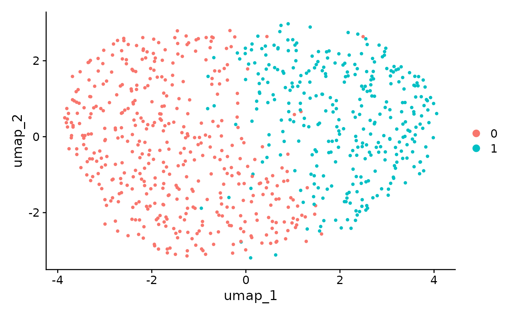

Perform ClusterDE on a cell line dataset
Dongyuan Song
Bioinformatics IDP, University of California, Los Angelesdongyuansong@ucla.edu
3 July 2024
Source:vignettes/ClusterDE-cellline.Rmd
ClusterDE-cellline.Rmd
#tools::R_user_dir("ClusterDE", which="cache")
library(ClusterDE)
library(Seurat)
library(SingleCellExperiment)
library(ggplot2)Download data
We download the a cell line data set H2228. The original data is from Tian et al., Nature Methods 2019 as the gold standard for benchmarking the accuracy of clustering. Since the data is from the pure cell line, it should not have cell types, and, of course, between cell type DE genes. Note: it does not mean that there are no variations within one cell line; of course there are, e.g., cell cycle, total UMI, etc. However, these variations do not represent discrete cell groups and essentially it means you should not using your obtained clusters to explain the variation.
Run the regular Seurat pipeline
We perform the default Seurat clustering. Please note that ClusterDE is designed for 1 vs 1 comparison; therefore, we set the resolution as 0.2 here to obtain two clusters for illustration purpose.
RNGkind("L'Ecuyer-CMRG")
set.seed(123)
cellline <- UpdateSeuratObject(cellline) ## Avoid errors
#> Validating object structure
#> Updating object slots
#> Ensuring keys are in the proper structure
#> Updating matrix keys for DimReduc 'PCA'
#> Updating matrix keys for DimReduc 'UMAP'
#> Ensuring keys are in the proper structure
#> Ensuring feature names don't have underscores or pipes
#> Updating slots in originalexp
#> Updating slots in PCA
#> Updating slots in UMAP
#> Setting UMAP DimReduc to global
#> Validating object structure for Assay 'originalexp'
#> Validating object structure for DimReduc 'PCA'
#> Validating object structure for DimReduc 'UMAP'
#> Object representation is consistent with the most current Seurat version
cellline <- NormalizeData(object = cellline)
cellline <- FindVariableFeatures(object = cellline)
cellline <- ScaleData(object = cellline)
#> Centering and scaling data matrix
cellline <- RunPCA(object = cellline)
#> PC_ 1
#> Positive: RPS14, RPL18AP3, RPL36, RPS23, RPL28, LRRC75A-AS1, AC079250.1, FTH1, ZFAS1, EEF2
#> RPL7P9, RPL13A, RPS3AP26, EEF1A1P13, RPS16, RPS23P8, RPL13AP5, RPL29, FTH1P10, RPL13AP25
#> SNHG5, FTH1P8, RPL4, RPS3AP6, AC064799.1, C6orf48, FTH1P7, C1orf56, RPL7AP6, TMSB4X
#> Negative: PSMB2, PSMA7, U2AF1, NUDC, RBM8A, CALM1, BUB3, CLIC1, U2AF1L5, XRCC5
#> VPS29, RBM8B, CACYBP, RPA3, SSBP1, PSMC5, MRPL47, PSMD8, BRIX1, CNIH4
#> PCMT1, PSMD13, CYC1, PRDX2, SEPT7, S100A11, VDAC3, PSME2P2, ZWINT, HMGB1
#> PC_ 2
#> Positive: NACA, RPL7AP6, SKP1, UBA52, BTF3, SSR2, RPL7A, ARPC3, RPL9P9, PPIA
#> PSMD4, EIF1, RPL10, LGALS3BP, RPL10P16, SNRPB2, RPL10P9, S100A11, PPIB, ANXA5
#> EEF2, PSME1, SSBP1, SSR4, RPL7P9, COPE, BSG, MGST1, VPS28, COPS6
#> Negative: SIVA1, HNRNPAB, RPL39L, DEK, CDCA5, TMPO, FAM111A, ASF1B, CENPK, ESCO2
#> BRCA1, H2AFV, RAD51AP1, MT-RNR2, ORC6, CENPX, SNRNP25, FBXO5, RRM1, DIAPH3
#> USP1, CDCA4, TMEM106C, PGP, LSM4, C21orf58, CENPN, BRI3BP, SGO1, CHAF1A
#> PC_ 3
#> Positive: RPL13AP5, RPL13AP25, AC024293.1, RPL29, RPSAP19, RPS5, RPL18, RPS3AP26, RPS3AP6, RPL15
#> RPL28, DRAP1, RPS11, RPL9P9, RPL13AP7, RPS19, DCBLD2, FXYD5, FEN1, SLBP
#> RPS15, COTL1, RPSA, FLNA, RPL7AP6, RPL36, C1orf21, CPA4, ORC6, RPS16
#> Negative: SMIM22, TSPAN13, ST14, PERP, CRB3, MT-CO1, SERINC2, ATP1B1, CDH1, F11R
#> B2M, MT-RNR2, SPINT1, NMB, PLA2G16, SPDEF, CD55, ADGRF1, TSPAN1, LIMA1
#> ERBB3, ERO1A, ASS1, CDA, ALCAM, SYNGR2, MT-CO2, CDH3, C3, LSR
#> PC_ 4
#> Positive: IFNGR1, NAMPT, NAP1L1, CPD, LMAN1, CALR, ITGA2, NAMPTP1, ITM2B, RRM1
#> C3, RHOBTB3, CTHRC1, EEF2, HSD17B11, C1S, IFI16, SMC2, CPE, EPHX1
#> DST, HLA-DMB, NUCB2, MT-ND6, TMEM45A, BRCA1, CDK5RAP2, HINT1, C1R, FAM111A
#> Negative: S100A16, TMA7, TIMM8B, PFN1, SLIRP, GPX1, LAMC2, POLR2L, MRPL52, RPS19
#> CDH1, TOMM40, ATP5MD, HSPE1, NAA10, GPX1P1, RPS16, MRPL12, MCRIP2, PDCD5
#> RPL18, PLEC, S100A13, RPL36AL, LAD1, MGLL, BOLA2B, MISP, MRPL36, SEC61G
#> PC_ 5
#> Positive: HINT1, COX5B, TXN, SOD1, NDUFA4, NDUFS6, ATP5PO, ATP5MC3, S100A10, ATP6V0E1
#> CYB5A, SLIRP, NDUFB4, ATP5MC1, HSPE1, TXNP6, POMP, POLR2L, RPS14, HSPE1P4
#> RPS15, CBR1, NDUFB3, HSPE1P3, ATP5PD, COX7B, ADGRF1, PSMB9, AC079250.1, NDUFAB1
#> Negative: BTG1, PPP1R15A, EIF1, JUN, CEBPG, H3F3B, TMEM132A, C6orf48, HIST2H4B, SGK1
#> KPNA4, PMEPA1, KLF6, CDKN1A, WARS, PEA15, GARS, MAP1LC3B, SNHG12, SERTAD1
#> LAMC2, EPB41L4A-AS1, NAP1L1, SNHG5, KLF10, SLC7A5, KIF5B, ATP2B1, EIF5, ABL2
#> Warning: Key 'PC_' taken, using 'pca_' instead
cellline <- FindNeighbors(object = cellline)
#> Computing nearest neighbor graph
#> Computing SNN
cellline <- FindClusters(object = cellline, resolution = 0.2)
#> Modularity Optimizer version 1.3.0 by Ludo Waltman and Nees Jan van Eck
#>
#> Number of nodes: 758
#> Number of edges: 24895
#>
#> Running Louvain algorithm...
#> Maximum modularity in 10 random starts: 0.8257
#> Number of communities: 2
#> Elapsed time: 0 seconds
cellline <- RunUMAP(object = cellline, dims = 1:10)
#> Warning: The default method for RunUMAP has changed from calling Python UMAP via reticulate to the R-native UWOT using the cosine metric
#> To use Python UMAP via reticulate, set umap.method to 'umap-learn' and metric to 'correlation'
#> This message will be shown once per session
#> 22:28:30 UMAP embedding parameters a = 0.9922 b = 1.112
#> 22:28:30 Read 758 rows and found 10 numeric columns
#> 22:28:30 Using Annoy for neighbor search, n_neighbors = 30
#> 22:28:30 Building Annoy index with metric = cosine, n_trees = 50
#> 0% 10 20 30 40 50 60 70 80 90 100%
#> [----|----|----|----|----|----|----|----|----|----|
#> **************************************************|
#> 22:28:31 Writing NN index file to temp file /tmp/Rtmp8TZr84/file81f33065be44
#> 22:28:31 Searching Annoy index using 1 thread, search_k = 3000
#> 22:28:31 Annoy recall = 100%
#> 22:28:31 Commencing smooth kNN distance calibration using 1 thread with target n_neighbors = 30
#> 22:28:32 Initializing from normalized Laplacian + noise (using RSpectra)
#> 22:28:32 Commencing optimization for 500 epochs, with 27914 positive edges
#> 22:28:33 Optimization finishedFrom the UMAP, the two clusters seem to be dubious. Although we do not expect the existence of cell types, when we perform Seurat DE test between the two clusters, and we get > 1000 genes with FDR < 0.05. It means that the double dipping introduces a huge number of discoveries.
original_markers <- FindMarkers(cellline,
ident.1 = 0,
ident.2 = 1,
min.pct = 0,
logfc.threshold = 0)
#> For a (much!) faster implementation of the Wilcoxon Rank Sum Test,
#> (default method for FindMarkers) please install the presto package
#> --------------------------------------------
#> install.packages('devtools')
#> devtools::install_github('immunogenomics/presto')
#> --------------------------------------------
#> After installation of presto, Seurat will automatically use the more
#> efficient implementation (no further action necessary).
#> This message will be shown once per sessionGenerate synthetic null data
We first generate the synthetic null data based on the target data (real data). You can increase the number of cores to speed it up.
count_mat <- GetAssayData(object = cellline, slot = "counts")
#> Warning: The `slot` argument of `GetAssayData()` is deprecated as of SeuratObject 5.0.0.
#> ℹ Please use the `layer` argument instead.
#> This warning is displayed once every 8 hours.
#> Call `lifecycle::last_lifecycle_warnings()` to see where this warning was
#> generated.
set.seed(123)
system.time(synthetic_null <- ClusterDE::constructNull(count_mat, nCores = 2, fastVersion = TRUE, family = "nb"))
#> 1 genes have no more than 2 non-zero values; ignore fitting and return all 0s.
#> 98.5% of genes are used in correlation modelling.
#> user system elapsed
#> 111.665 63.151 51.617We perform the same pipeline as we did for target data. Please note we need two clusters here, too. This is straightforward for clustering method with predefined cluster numbers, e.g., K-means. For louvain clustering used in Seurat you may manually adjust the resolution parameter so that we still get two clusters.
cellline_null <- CreateSeuratObject(counts = synthetic_null)
set.seed(123)
cellline_null <- NormalizeData(object = cellline_null)
#> Normalizing layer: counts
cellline_null <- FindVariableFeatures(object = cellline_null)
#> Finding variable features for layer counts
cellline_null <- ScaleData(object = cellline_null)
#> Centering and scaling data matrix
cellline_null <- RunPCA(object = cellline_null)
#> PC_ 1
#> Positive: NUCKS1, CALM1, CACYBP, PSMB2, SOD1, NDUFAB1, ATP5PO, XRCC5, VPS29, ATP5PD
#> PSMA7, RPA3, U2AF1, HMGB1, BUB3, RBM8A, NUDC, CNIH4, PSMC5, MRPL47
#> RANBP1, CCDC34, SRSF7, SLIRP, ATP5MC3, CYC1, SEPT7, MRPL51, NDUFA8, SNRPF
#> Negative: RPL28, RPL13AP25, RPL13AP5, LRRC75A-AS1, RPS11, RPL13A, EEF2, RPS16, ZFAS1, RPL7P9
#> EEF1A1P13, RPL10P16, RPL10, RPS3AP6, RPL7AP6, RPL9P9, RPS4XP11, RPL13AP7, RPS5, SNHG5
#> RPL10P9, FTH1, TMSB4X, RPL4, RPS23P8, RPS3, RPS15, EPB41L4A-AS1, UGCG, FTH1P8
#> PC_ 2
#> Positive: NACA, SKP1, SSR2, PSMD4, BTF3, RPL7AP6, LGALS3BP, RPL7A, ARPC3, UBA52
#> RPL9P9, BSG, ADH5, RPL10, ANXA5, EIF1, CTSD, SNRPB2, MGST1, PPIB
#> RPL10P16, SSBP1, PSME1, RPL10P9, EIF3M, SQSTM1, EEF2, RNH1, PPA1, ERP29
#> Negative: SIVA1, CDCA5, RPL39L, TMPO, CENPX, CDCA4, HNRNPAB, DEK, CENPK, H2AFV
#> SAC3D1, CKLF, ASF1B, SUZ12, USP1, ESCO2, FAM111A, SHCBP1, CENPN, ORC6
#> FBXO5, BRCA1, ZWINT, LSM4, RAD51AP1, MT-CO2, WDR34, CHAF1A, DNAJC9, CMC2
#> PC_ 3
#> Positive: RPSAP19, RPL13AP5, RPL18, RPL13AP25, RPL15, RPS11, RPL13AP7, RPS5, RPS19, CFL1
#> RPSA, FXYD5, FBL, RPL28, SLBP, PDCD5, RPS3AP6, RPS16, RPL9P9, PEBP1
#> DRAP1, PFN1, AP2S1, NME1, NAA10, RPS15, FLNA, DNMT1, COTL1, UBA52
#> Negative: MT-CO1, MTCO1P12, TSPAN13, B2M, ADGRF1, ST14, MT-CO2, CPD, SERINC2, LIPH
#> SMIM22, C3, GOLGB1, NMB, PERP, F11R, ASS1, LIMA1, ATP1B1, SELENBP1
#> MT-CYB, TAX1BP1, LGMN, PPIC, GPX3, SPINT1, HLA-E, SDC4, TNFAIP2, CCDC186
#> PC_ 4
#> Positive: SLIRP, S100A16, POLR2L, ATP5MC3, RPL36AL, HSPE1, NDUFS6, TRMT112, S100A13, HSPE1P4
#> COX7B, HSPE1P3, ATP5MC1, SNRPG, COX5B, PFN1, MPC1, MRPL12, SNRPF, MCRIP2
#> BOLA2B, DYNLL1, NAA10, CHCHD10, PDCD5, NDUFB10, SEC61G, CYC1, MGLL, NDUFB3
#> Negative: NAP1L1, NAMPT, RRM1, C1S, EZH2, IFNGR1, TARS, BRCA1, RFC4, ITGA2
#> PSAP, RAD51AP1, ATF4, SYNE2, RMI1, CPD, EXOSC8, CEP57, GLA, FANCG
#> GARS, HSD17B4, P4HB, SLC7A11, EEF1A1P13, IFI16, LRRC75A-AS1, CDCA5, NCOA7, MCM6
#> PC_ 5
#> Positive: H3F3B, BTG1, CDCA8, KIF5B, CEP55, CDCA2, TROAP, C6orf48, RPL10P16, KIF20A
#> UBALD2, KIF14, RPL10P9, RPL10, NEK2, KIF4A, ARHGAP11A, EIF1, MXD3, PRR11
#> HMGB3, CKAP2L, AAK1, RAD21, HP1BP3, RACGAP1, RNF26, RPSAP19, AC084033.3, FOXM1
#> Negative: S100A10, ATP6V0E1, TXN, ASPH, RMI2, SPTSSA, COX5B, MRPL17, NDUFB4, IFNGR1
#> SOD1, PAQR4, THYN1, RFC4, CDC6, CDCA7, GCHFR, ATP5PO, MCM2, CASP4
#> ATP5MC1, SLBP, FTH1, C9orf3, COTL1, FTH1P8, CARHSP1, ADGRF1, MCM3, RPA3
cellline_null <- FindNeighbors(object = cellline_null)
#> Computing nearest neighbor graph
#> Computing SNN
cellline_null <- FindClusters(object = cellline_null, resolution = 0.3)
#> Modularity Optimizer version 1.3.0 by Ludo Waltman and Nees Jan van Eck
#>
#> Number of nodes: 758
#> Number of edges: 29737
#>
#> Running Louvain algorithm...
#> Maximum modularity in 10 random starts: 0.7327
#> Number of communities: 2
#> Elapsed time: 0 seconds
cellline_null <- RunUMAP(object = cellline_null, dims = 1:10)
#> 22:30:17 UMAP embedding parameters a = 0.9922 b = 1.112
#> 22:30:17 Read 758 rows and found 10 numeric columns
#> 22:30:17 Using Annoy for neighbor search, n_neighbors = 30
#> 22:30:17 Building Annoy index with metric = cosine, n_trees = 50
#> 0% 10 20 30 40 50 60 70 80 90 100%
#> [----|----|----|----|----|----|----|----|----|----|
#> **************************************************|
#> 22:30:17 Writing NN index file to temp file /tmp/Rtmp8TZr84/file81f358a90853
#> 22:30:17 Searching Annoy index using 1 thread, search_k = 3000
#> 22:30:17 Annoy recall = 100%
#> 22:30:17 Commencing smooth kNN distance calibration using 1 thread with target n_neighbors = 30
#> 22:30:18 Initializing from normalized Laplacian + noise (using RSpectra)
#> 22:30:19 Commencing optimization for 500 epochs, with 28134 positive edges
#> 22:30:20 Optimization finished
DimPlot(object = cellline_null, reduction = "umap") We perform the DE test on synthetic null data.
null_markers <- FindMarkers(cellline_null,
ident.1 = 0,
ident.2 = 1,
min.pct = 0,
logfc.threshold = 0)We extract the p-values from both original data and synthetic null
data, then use ClusterDE to “compare” them. We do not
discover any DE genes.
original_pval <- original_markers$p_val
names(original_pval) <- rownames(original_markers)
null_pval <- null_markers$p_val
names(null_pval) <- rownames(null_markers)
res <- ClusterDE::callDE(original_pval, null_pval, nlogTrans = TRUE)
cat(paste0("Number of DE gene is ", length(res$DEgenes)))
#> Number of DE gene is 0We can also visualize the distribution of contrast scores (diff between the -log p-values from real and null). It is roughly symmetric around 0.
ggplot(data = res$summaryTable, aes(x = cs)) + geom_histogram(fill = "white", color = "black") + theme_bw() + ggtitle("Distribution of constrast scores")
#> `stat_bin()` using `bins = 30`. Pick better value with `binwidth`.Session information
sessionInfo()
#> R version 4.4.1 (2024-06-14)
#> Platform: x86_64-pc-linux-gnu
#> Running under: Ubuntu 22.04.4 LTS
#>
#> Matrix products: default
#> BLAS: /usr/lib/x86_64-linux-gnu/openblas-pthread/libblas.so.3
#> LAPACK: /usr/lib/x86_64-linux-gnu/openblas-pthread/libopenblasp-r0.3.20.so; LAPACK version 3.10.0
#>
#> Random number generation:
#> RNG: L'Ecuyer-CMRG
#> Normal: Inversion
#> Sample: Rejection
#>
#> locale:
#> [1] LC_CTYPE=C.UTF-8 LC_NUMERIC=C LC_TIME=C.UTF-8
#> [4] LC_COLLATE=C.UTF-8 LC_MONETARY=C.UTF-8 LC_MESSAGES=C.UTF-8
#> [7] LC_PAPER=C.UTF-8 LC_NAME=C LC_ADDRESS=C
#> [10] LC_TELEPHONE=C LC_MEASUREMENT=C.UTF-8 LC_IDENTIFICATION=C
#>
#> time zone: UTC
#> tzcode source: system (glibc)
#>
#> attached base packages:
#> [1] stats4 stats graphics grDevices utils datasets methods
#> [8] base
#>
#> other attached packages:
#> [1] ggplot2_3.5.1 SingleCellExperiment_1.26.0
#> [3] SummarizedExperiment_1.34.0 Biobase_2.64.0
#> [5] GenomicRanges_1.56.1 GenomeInfoDb_1.40.1
#> [7] IRanges_2.38.0 S4Vectors_0.42.0
#> [9] BiocGenerics_0.50.0 MatrixGenerics_1.16.0
#> [11] matrixStats_1.3.0 Seurat_5.1.0
#> [13] SeuratObject_5.0.2 sp_2.1-4
#> [15] ClusterDE_0.99.3 BiocStyle_2.32.1
#>
#> loaded via a namespace (and not attached):
#> [1] RColorBrewer_1.1-3 jsonlite_1.8.8 magrittr_2.0.3
#> [4] spatstat.utils_3.0-5 farver_2.1.2 rmarkdown_2.27
#> [7] zlibbioc_1.50.0 fs_1.6.4 ragg_1.3.2
#> [10] vctrs_0.6.5 ROCR_1.0-11 memoise_2.0.1
#> [13] spatstat.explore_3.2-7 S4Arrays_1.4.1 htmltools_0.5.8.1
#> [16] SparseArray_1.4.8 sass_0.4.9 sctransform_0.4.1
#> [19] parallelly_1.37.1 KernSmooth_2.23-24 bslib_0.7.0
#> [22] htmlwidgets_1.6.4 desc_1.4.3 ica_1.0-3
#> [25] plyr_1.8.9 plotly_4.10.4 zoo_1.8-12
#> [28] cachem_1.1.0 igraph_2.0.3 mime_0.12
#> [31] lifecycle_1.0.4 pkgconfig_2.0.3 Matrix_1.7-0
#> [34] R6_2.5.1 fastmap_1.2.0 GenomeInfoDbData_1.2.12
#> [37] fitdistrplus_1.1-11 future_1.33.2 shiny_1.8.1.1
#> [40] digest_0.6.36 colorspace_2.1-0 patchwork_1.2.0
#> [43] tensor_1.5 RSpectra_0.16-1 irlba_2.3.5.1
#> [46] kde1d_1.0.7 textshaping_0.4.0 labeling_0.4.3
#> [49] progressr_0.14.0 fansi_1.0.6 spatstat.sparse_3.1-0
#> [52] coop_0.6-3 httr_1.4.7 polyclip_1.10-6
#> [55] abind_1.4-5 compiler_4.4.1 withr_3.0.0
#> [58] fastDummies_1.7.3 highr_0.11 MASS_7.3-60.2
#> [61] DelayedArray_0.30.1 tools_4.4.1 lmtest_0.9-40
#> [64] httpuv_1.6.15 future.apply_1.11.2 goftest_1.2-3
#> [67] glue_1.7.0 nlme_3.1-164 promises_1.3.0
#> [70] grid_4.4.1 Rtsne_0.17 cluster_2.1.6
#> [73] reshape2_1.4.4 generics_0.1.3 gtable_0.3.5
#> [76] spatstat.data_3.1-2 tidyr_1.3.1 data.table_1.15.4
#> [79] XVector_0.44.0 utf8_1.2.4 spatstat.geom_3.2-9
#> [82] RcppAnnoy_0.0.22 ggrepel_0.9.5 RANN_2.6.1
#> [85] pillar_1.9.0 stringr_1.5.1 limma_3.60.3
#> [88] spam_2.10-0 RcppHNSW_0.6.0 later_1.3.2
#> [91] splines_4.4.1 dplyr_1.1.4 lattice_0.22-6
#> [94] survival_3.6-4 deldir_2.0-4 tidyselect_1.2.1
#> [97] miniUI_0.1.1.1 pbapply_1.7-2 knitr_1.47
#> [100] gridExtra_2.3 bookdown_0.40 scattermore_1.2
#> [103] xfun_0.45 statmod_1.5.0 UCSC.utils_1.0.0
#> [106] stringi_1.8.4 lazyeval_0.2.2 yaml_2.3.8
#> [109] evaluate_0.24.0 codetools_0.2-20 tibble_3.2.1
#> [112] BiocManager_1.30.23 cli_3.6.3 uwot_0.2.2
#> [115] xtable_1.8-4 reticulate_1.38.0 systemfonts_1.1.0
#> [118] munsell_0.5.1 jquerylib_0.1.4 Rcpp_1.0.12
#> [121] globals_0.16.3 spatstat.random_3.2-3 png_0.1-8
#> [124] rngWELL_0.10-9 parallel_4.4.1 randtoolbox_2.0.4
#> [127] assertthat_0.2.1 pkgdown_2.0.9 mvnfast_0.2.8
#> [130] dotCall64_1.1-1 listenv_0.9.1 viridisLite_0.4.2
#> [133] scales_1.3.0 ggridges_0.5.6 crayon_1.5.3
#> [136] leiden_0.4.3.1 purrr_1.0.2 rlang_1.1.4
#> [139] rvinecopulib_0.6.3.1.1 cowplot_1.1.3